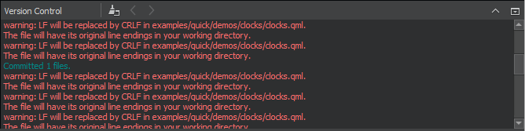
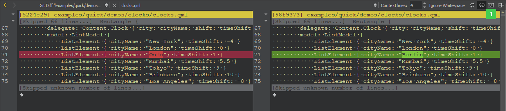

Use common VCS functions
The Tools menu has a submenu for each supported version control system. This section describes using the functions that are available for all the supported version control systems. The additional functions and options available for a particular version control system are described in separate topics.
The Version Control view displays the commands that are executed, a timestamp, and the relevant output. Select View > Output > Version Control to open the view.

Add files
When you create a new file or a new project, the wizard displays a page asking whether the files should be added to a version control system. This happens when the parent directory or the project is already under version control and the system supports the concept of adding files, for example, Perforce and Subversion. Alternatively, you can add files later by using the version control tool menus.
View diff output
All version control systems have menu options to diff the current file or project: to compare it with the latest version stored in the repository and to display the differences. In Qt Creator, a diff is displayed in a read-only editor. If the file is accessible, you can double-click on a selected diff chunk and Qt Creator opens an editor displaying the file, scrolled to the line in question.

With Git, Mercurial, and Subversion, the diff is displayed side-by-side in a diff editor by default. To use the inline diff view instead, select the Switch to Text Diff Editor (1) option from the toolbar. In the inline diff view, you can use context menu commands to apply, revert, stage, and unstage chunks or selected lines, as well as send chunks to a code pasting service.
View versioning history and change details
Display the versioning history of a file by selecting Log or Filelog. Typically, the log output has the date, commit message, and a change or revision identifier.
Annotate files
To open annotation views, select Annotate or Blame. They show the lines of the file and the identifier of the change the lines originate from. Click the change identifier to see a detailed description of the change.
To show the annotation of a previous version, right-click on the version identifier at the beginning of a line and choose one of the revisions shown at the bottom of the context menu. This allows you to navigate through the history of the file and obtain previous versions of it. It also works for Git and Mercurial using SHA-1.
The same context menu is available when right-clicking on a version identifier in the file log view of a single file.
Commit changes
Once you have finished making changes, submit them to the version control system by choosing Commit or Submit. Qt Creator displays a commit page that has a text editor where you can enter your commit message and a checkable list of modified files to include.
Revert changes
All supported version control systems support reverting your project to known states. This functionality is generally called reverting.
The changes discarded depend on the version control system.
A version control system can replace the Revert menu option with other options.
View status
You can select Status to view the status of the project or repository.
Update the working tree
You can select Update to update your working tree with the latest changes from the branch. Some version control systems allow you to choose between updating the current project and updating all projects.
Delete files
You can select Delete to delete obsolete files from the repository.
See also Bazaar, ClearCase, CVS, Fossil, Git, GitLab, Mercurial, Perforce, Subversion, Set up version control systems, and Version Control Systems.